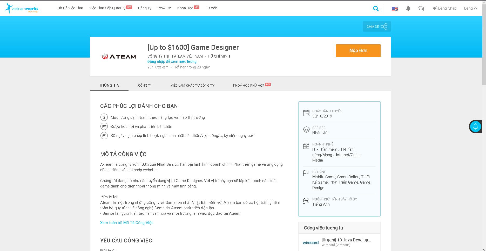

Intrest in I.T
I've been intrested in I.T ever since i was 12 years old. People say that when you passionate about something, you'll be drawn to it. This is mainly the reason why i know am intrested in I.T because i have always curious when it comes to technology and mechanics. For example: I used to try all the possible combination and formulas within the calculator when i was in elementary. I also installed a first software when i was 6, it might be simple but i doing it more then i was playing basketball or badmintion. The day that sparked my intrest in I.T is the day that my father brought home our very first computer in 2007. At that moment, i knew that i can do many great things in the future in i have a screen in my eyes and keyboard under my hands.
Why did I choose to come to RMIT?
There are many reasons why i chose to come at RMIT. One of them is my brother, he had studied here and now, he said he will have a bright future because the RMIT has a lot of resources and assistant. Not only, the school's quality is good and flexible, bathrooms are everywhere and also very spacious, makes your day just a little better when you have an emergency. Not only that, teachers and students here are very friendly and helpfull. But the reason that i think it's the most is because the school has reliable I.T courses that i know will help me reach furthure than i could ever imagine. During my studies i would very much like to obtain the knowlegde of coding, programing, developing, debugging and designing.
My Ideal Job
My Ideal Job is to become a "Game designer". The reason why i want this job is because i want to share my passion with other people through the world of computing. I know codding and programing can something be challenging and time consuming. But knowing that all your hard work will one day make somebody's life a little better is worth the time and challenge. I want to entertaine people using the digital world because thatt's the world we are living in
Job Description: This is a job where you can have a friendly enviroment, strong personality and flexible worktime. There are my gaming companies nowadys and they all need talnted game designers. You'll also sometimes get to travel to places to gather insparation and information for the the development of the game.
My current skills:
Basic knowlegde of coding, progmaing (Python 3.7). Therefore, I need to work hard in order the reach the goal i desire (which will be huge challage and yet, a huge step in my life) and i'll use all of my knowlegde and help from RMIT teachers and friends to get there.
Requirements:
[Obligatory]: Experience in game development planning, building and designing content and scripts for games, Provide new ideas or update features for the game.
[Prioritize]: Experience in planning game production, knowledge of game programming or experience in game programming.
[Personality required] Interested in games and interested in game production, be a contributor to the team to achieve common goals and create shock in the world, ability to test applications and games from the perspective of users, dynamic, creative and always learning and developing.
You can find out more about this job here: Vietnamworks 
My Project Idea
Overview: This project is mainly about making "One Tap", "Finger Slides" games that is on "Mobile Platform". Everyone have smartphone nowadays and it would be a great opportunity to entertain people through the device that everyone need to use at least once every day of the week. The game it-self should be fun and competitive. Meaning there will be scores and leaderboard, this makes people want to play and be better so that they can improve themselves over time. The art must be simple and the mechanics must be easy to understand that even a 5 year’s old kid can understand because am aiming the entertain all ages.
Motivation: There are many games across many platforms. But phones are convenient and easy to code because it’s simple. But being simple doesn’t mean it’s boring. For example, flappy bird was an extreme simple and easy game to play. But in 2014, it reaches 50 million people in popularity and the result earning 50 000 USD per Day according to cnet.com. It was at this moment that I realized we could entertain people around the world and can still take care of ourselves by making other people’s day just a little better. After “flappy bird” I would love to make a game that have the same concept.
Description: One of the games that I on plan on making is called "A day in a cat’s life". This game, as it says in the title, you will get to play as a cat wandering around a room, park, town, barn, house, etc. The camera will be placed above and you’ll have to tap a destination upon the screen with your finger in order to get the cat move from place to place. Not only that, you can interact with the cat it-self. For example, there will be a menu of items that you can unlock as you progress through the game and complete mini-challenges. Items like: A ball of strings, laser pointer, treats, mouse toy, etc. The challenges will not be difficult. It will involve doing simple things such as: pet your cat 3 times, get it to run for around for 5 seconds or even don’t do anything for 1 minute. You can also custom your very own cat with basic color patterns and body shape. After customizing it, you have the option to take pictures with an already provided background and share it around social media .The cat will also grow up as time passes and so it’s habits and behavior will change a little as it grow into an mature then, an adult cat. But don't worry if you don’t want your cat to grow up quickly or at all. There will potions that turn your cat back into baby or even delay the time it ages. You can have these potions the way as getting toys for your cats, by completing challenges, these challenges will also change weekly and also the reward. The more challenge you complete and the more rewards and points you get and those points will be recorded and put in the leaderboard so you can look at your result compare to others and get and competitive environment. The game will also have day time and night time, but players and change them at will. Because there will be challenges that required you to do in a specific time of the day and if you have to wait, it could be surprisingly annoying. I also considering setting a feature called the "Gathering Hub" within the game. The feature allows all players from around the world gather in to a house, mansion, tree-house, beach, park, etc. This feature will let the players to shows off their cats and chat with each other as well as create a friendly atmosphere. Of course, this is a family friendly content so there will not be any strong or dirty languages spoken around the "Gathering Hub". Finally, this game can also act as an alarm clock. You just need to set the time, the sound of cats you like to here and done, you'll have a personal cat sound act as your very own alarm clock. In conclusion, you'll spend a lot of time playing with cats and I hope that it will bring you joy throughout the day.
Tools and Technologies: The main software I will most likely use to do my projects is called “Unity” because I have online courses and tutorials from “Udemy”. This could help me get better at making my projects at a faster pace. Not only that, my current PC cannot handle demanding software “Undreal”. Therefore, “Unity” is the best option for and possibly in the future as well. I would need 2 computers that have enough requirements to draw, render and code to my projects efficiently and more stable. One for coding and debugging, one for background and characters drawing and rendering. Having only one PC could lead to an unorganized, slow and easy-mistakes work.
Skills Required: My projects do not require to have high demanding skills such as Storytelling ability, Artistic vision. But it requires you to have the ability to work as part of a team, excellent programming skills, and the most important skill to have is a passion for video games. These projects needed to be simple but also fun and exciting at the same time.
Outcome: If my project is successful, it would be an amazing experience for me and knowing that I have made some faces out there in the world smile and if it gains a large amount of popularity. I will consider put an advertisement into the products that I have made, but it will be controlled and will not have any large impact on the people that are using it. Overall, if I could support myself financially by creating something that entertains people, I will go further and make better projects as well as maintaining the successful ones. Of course, nothing will be called a failure, just another way to become successful.